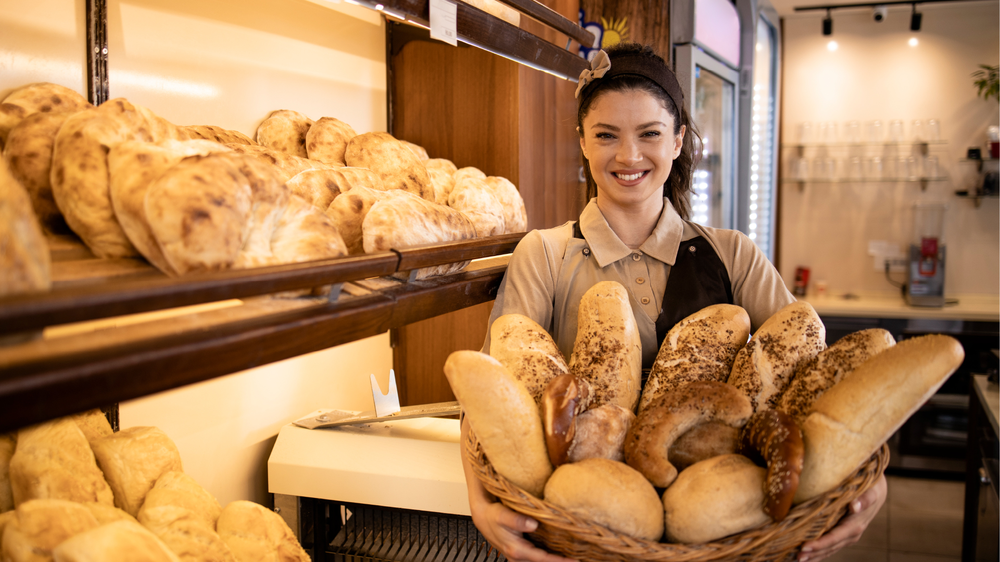
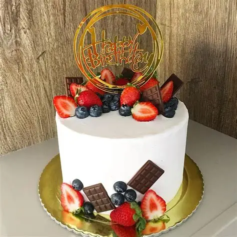
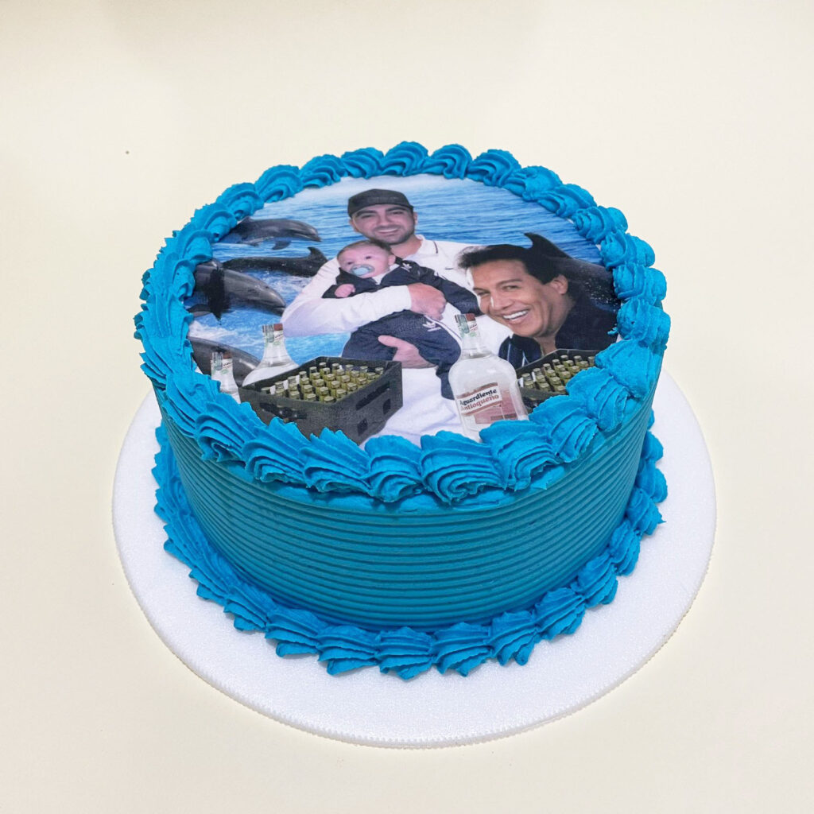
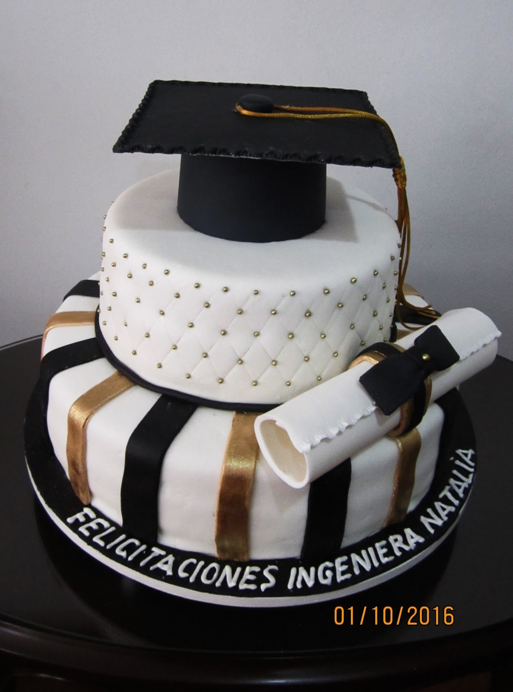

Bienvenido a La Espiga
Descubre el sabor auténtico de la panadería artesanal en La Espiga. Cada pieza de pan y cada dulce es elaborado con dedicación y pasión, siguiendo recetas tradicionales que han pasado de generación en generación.
Te invitamos a explorar nuestro catálogo online, realizar tus pedidos para llevar o visitarnos en nuestra tienda para acompañar tu pan favorito con un buen café. ¡Gracias por dejar que La Espiga sea parte de tu día a día!
Nota: Todos nuestros productos son elaborados con ingredientes frescos y de alta calidad, garantizando una experiencia única en cada bocado.

Nuestros Productos Destacados
- Pan de masa madre
- Baguettes y panes rústicos
- Croissants y bollería
- Tartas y pasteles artesanales
- Galletas y dulces tradicionales
- Pan integral y sin gluten
- Pan de centeno
- Pan de avena y semillas
Tortas Personalizadas
Ofrecemos tortas personalizadas para todo tipo de celebraciones. Puedes elegir entre una variedad de sabores, rellenos y decoraciones para hacer de tu evento un momento inolvidable.



Para más información sobre nuestras tortas personalizadas, no dudes en contactarnos.
Nuestra Historia
Fundada en 1985, Panadería La Espiga nació con la misión de ofrecer panes y repostería de la más alta calidad. Nuestro proceso tradicional de elaboración y el uso de ingredientes frescos hacen de cada producto una experiencia única.
A lo largo de los años, hemos crecido y nos hemos adaptado a las nuevas tendencias del mercado, pero siempre manteniendo nuestra esencia artesanal. Hoy en día, La Espiga es reconocida por su compromiso con la calidad y la satisfacción del cliente.